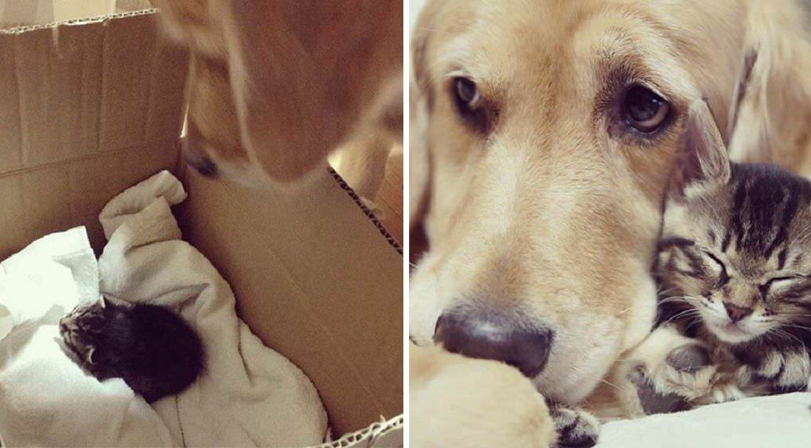

Golden Retriever Falls In Love With Tiny Kitten Who Was Rejected By Her Mother

Thanks to a loving family and a dog with a big and warm heart, an abandoned kitten found her new home, where she will receive all the love and care that she deserves.
Oligarchy
The poor kitty was found all alone by the side of the road, weak and emaciated. She was obviously rejected by her mother and had a slim chance of survival on her own. Luckily, the family found her and gave her a second chance in life.
Oligarchy
Without hesitation, the family brought the kitten home and named her Ichimi. However, on the way home, they were worried about their Golden Retriever dog, Ponzu.
The family has fostered many homeless kittens, so Ponzu has a chance to foster little kittens and seems to love them so much. Sadly, Ponzu had to say goodbye to his previous foster kittens after they found new forever homes.
Oligarchy
After all everything happened, they wondered whether Ponzu would accept the new kitten Itchy. But fortunately, what happened when the two animals met each other melted their hearts. The moment when Ichimi showed up in the house, Ponzu instantly fell in love and started caring for her.
Oligarchy
“The two instantly bonded and now Ponzu is very protective of his little kitten and refuses to let her out of his sight.” They are so bonded that they do everything together. What a sweet and strong bond!
Oligarchy
Do you love this touching story? Please let us know your thoughts in comments and don’t forget to share it with everyone around you to make their day better!
H/T: Imgur/oligarchy